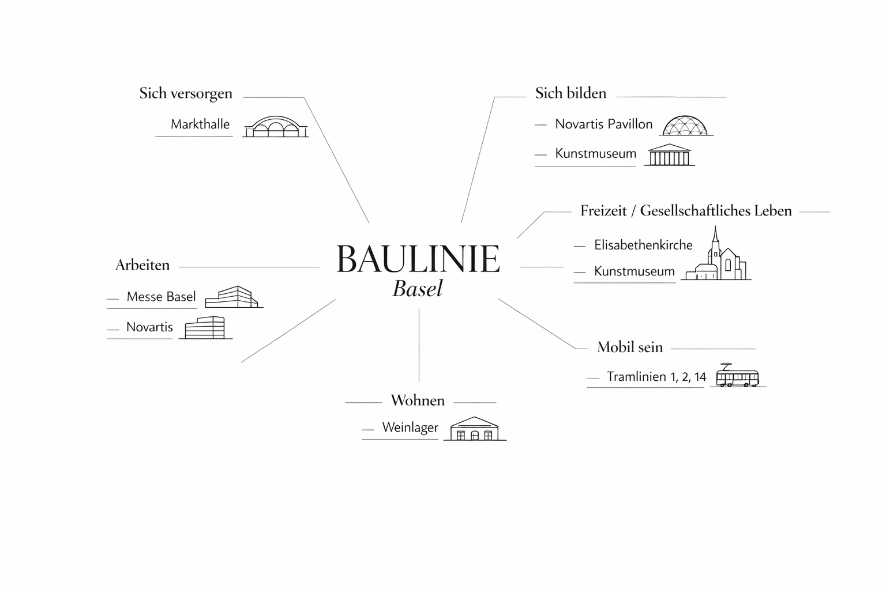

BAULINIE Basel
Ein interaktives Projekt zu Architektur, Mobilität und Stadtentwicklung entlang der Tramlinien 1, 2 und 14.
Architektur im Stadtraum sichtbar und erlebbar machen
Unser Projekt verbindet Architektur, Mobilität und Stadtentwicklung in einer interaktiven Route durch Basel. Ziel war es, ausgewählte Bauwerke aus verschiedenen Epochen sichtbar zu machen und ihre Bedeutung im heutigen Stadtraum verständlich aufzubereiten.
Kontext
Unser Projekt entstand im Rahmen des Wahlkurses „Grösser, weiter, nachhaltiger – die räumlichen und gesellschaftlichen Auswirkungen von Sport und Freizeitaktivitäten“ im 4. Jahr des Gymnasium Muttenz. Als Abschlussarbeit konnten wir ein eigenes Thema wählen und praktisch umsetzen.
Idee
Basel gilt als Schweizer Architekturhauptstadt: Historische Bauten treffen hier auf internationale Gegenwartsarchitektur. Ursprünglich wollten wir ein Fotobuch gestalten, entschieden uns jedoch für ein interaktives Format, das Architektur direkt im Stadtraum erlebbar macht.

Architektur im Zusammenhang mit Alltag und Nutzung
Ein wichtiger Bezugspunkt unseres Projekts waren die Grunddaseinsfunktionen. Die ausgewählten Bauwerke lassen sich nicht nur architektonisch betrachten, sondern auch mit grundlegenden Bedürfnissen und Funktionen des städtischen Lebens verknüpfen.
So steht die Markthalle beispielsweise für Versorgung, der Novartis Pavillon für Bildung und Wissensvermittlung, das Weinlager für Wohnen und die Elisabethenkirche für gesellschaftliche Teilhabe. Dadurch wird sichtbar, dass Architektur nicht isoliert existiert, sondern eng mit dem Alltag und der Entwicklung der Stadt verbunden ist.
Wer hinter BAULINIE Basel steht
Abinaya
Website, Programmierung, Fotografien und Gestaltung
Marla
Karte, Gestaltung und Routenentwicklung
Miranda
Texte, Interview und inhaltliche Recherche